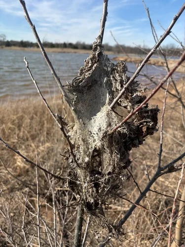

A silk web encloses leaves at the end of a branch
A late-season web draped over the tip of a deciduous branch can contain an entire group of fall webworm caterpillars. Observe whether leaves are inside the silk and whether the occupied portion is expanding. These features are more helpful than the total size of an old abandoned web.

Where to look
Look at what the silk surrounds. Fall webworms extend a tent over leaves at the ends of branches and feed together inside the enclosure. Use the web margin rather than its dense center for observation. At the margin you can see how the silk attaches to fresh leaves, while old layers at the center may hide both the larvae and the eaten foliage.
What confirms it
Examine the edge of the tent for active hairy larvae and fresh leaves being incorporated. Brown leaf remnants and droppings can accumulate inside.
Similar damage
Eastern tent caterpillars usually anchor their communal tent in a branch fork in spring. A late-season tent enclosing foliage at the tips fits fall webworm.
What to do
A healthy mature tree can often tolerate a few late nests. Remove small accessible nests mechanically when worthwhile; burning nests can injure the tree.
Follow-up
Mark the last enclosed leaf and check whether the web has expanded beyond it. An empty weathered web can linger after the larvae disperse.
Look through the outermost silk at a leaf that is still green. Occupied webbing stretches around fresh leaf clusters as the group grows. A dirty, torn tent with no larvae along its green perimeter gives little reason to prune a sound branch solely to remove the old silk.